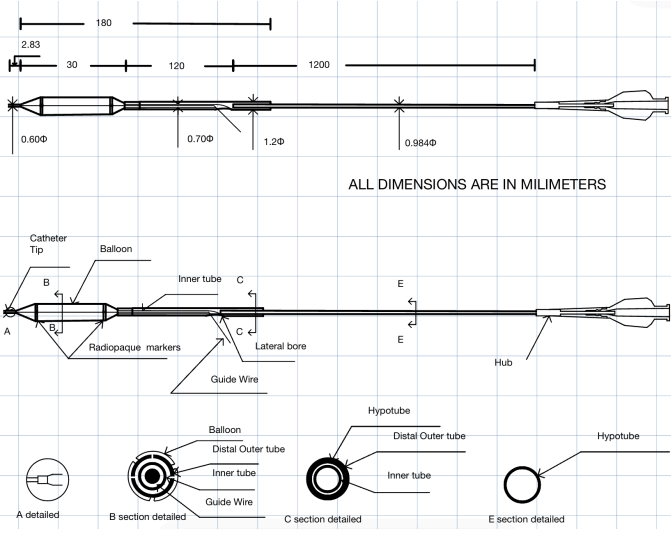
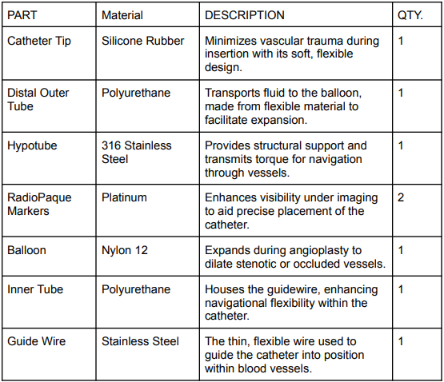
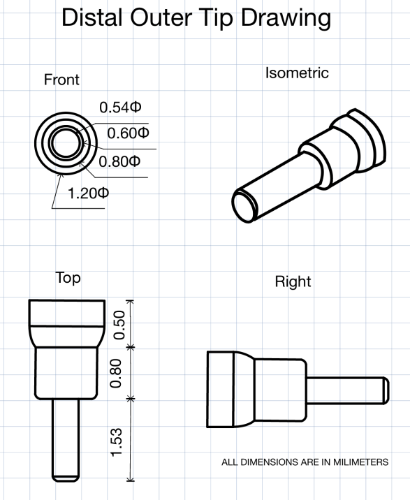
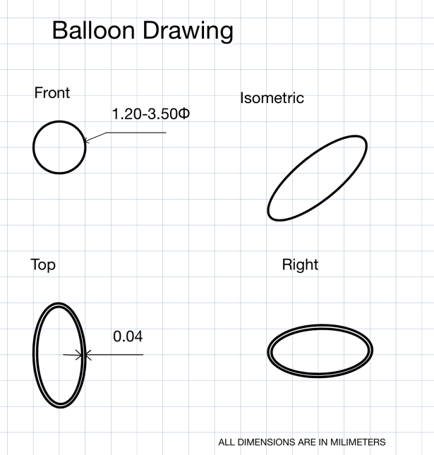
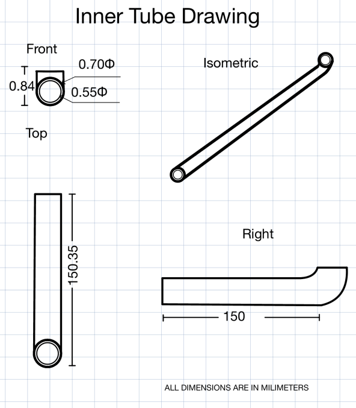
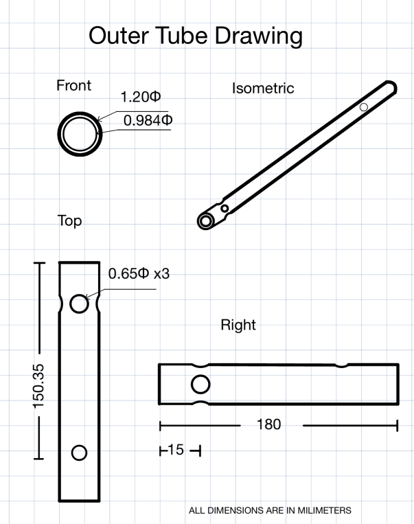
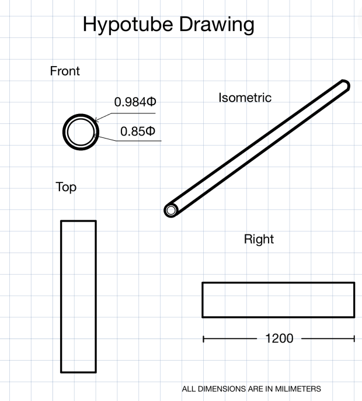

MEDICAL DEVICE • MECHANICAL DESIGN • BIOMECHANICS
PTCA Catheter Design
Engineering analysis and design of a multi-component percutaneous transluminal coronary angioplasty catheter with emphasis on balancing pushability, torquability, flexibility, and device geometry.

01 / OVERVIEW
Balancing competing mechanical requirements in a minimally invasive device.
PTCA catheters are used during coronary angioplasty to navigate the vascular system and deliver a balloon to a narrowed region of a coronary artery.
The engineering challenge is that the catheter must satisfy several competing requirements. It needs sufficient axial stiffness for pushability and rotational response for torquability while remaining flexible enough to navigate curved vascular anatomy.

PTCA catheter bill of materials and component specifications
02 / DESIGN CHALLENGE
Stiff enough to control. Flexible enough to navigate.
Catheter performance depends on the interaction between material properties, geometry, wall thickness, diameter, and the mechanical behavior of individual catheter segments.
Pushability
The catheter must efficiently transmit axial force from the proximal end toward the distal tip without excessive deformation.
Torquability
Rotational input from the physician must be transferred through the catheter to provide predictable control during navigation.
Flexibility
The distal portion must remain sufficiently compliant to navigate curved vascular anatomy while minimizing trauma to surrounding tissue.
03 / ENGINEERING ANALYSIS
Translating performance requirements into engineering specifications.
Mechanical calculations were used to evaluate catheter geometry and establish specifications capable of balancing stiffness, flexibility, and force transmission.
Geometry
Catheter diameter, wall thickness, and segment dimensions were evaluated as design variables.
Material Properties
Material behavior was considered when determining the stiffness and flexibility of catheter segments.
Axial Behavior
Mechanical relationships were used to evaluate axial stiffness and force transmission.
Torsional Behavior
Torsional response was considered to evaluate rotational control through the catheter shaft.
Bending
Flexural behavior was evaluated to maintain sufficient flexibility for vascular navigation.
Optimization
The final specifications represented a compromise between competing mechanical requirements rather than maximizing a single property.
04 / DEVICE ARCHITECTURE
A multi-component mechanical system.
Different regions. Different mechanical demands.
A catheter cannot simply be uniformly stiff or uniformly flexible. Different regions of the device serve different mechanical functions.
The design therefore considered how component geometry and material selection could be adjusted along the catheter to achieve the desired balance of proximal support and distal flexibility.

Distal outer tip — dimensional design

Balloon — dimensional design
05 / DESIGN OUTCOME
A design driven by mechanical tradeoffs.
The project demonstrated how catheter performance emerges from the interaction between geometry, material properties, and structural mechanics.
Rather than optimizing pushability, torquability, or flexibility independently, the device specifications were developed to balance all three requirements.
This design approach reflects a central challenge in minimally invasive medical devices: achieving sufficient mechanical control without sacrificing the compliance necessary for safe navigation through the body.

Inner tube — dimensional design

Outer tube — dimensional design

Hypotube — proximal structural component
06 / ENGINEERING TAKEAWAY
Designing around competing requirements.
The PTCA catheter project combined mechanics, material selection, medical-device requirements, and engineering calculations to translate clinical performance needs into physical device specifications.
FULL PROJECT DOCUMENTATION
PTCA Catheter Final Engineering Report
View the complete project report for additional details on catheter design, component dimensions, material selection, engineering calculations, mechanical performance, and technical specifications.
View Full Engineering Report ↗07 / TECHNICAL SKILLS